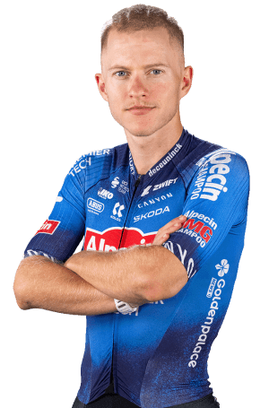

Gal Glivar
Datos personales
- Gal Glivar
- 01/05/2002
- Eslovenia
- Alpecin-Premier Tech
- 105

Datos equipos
- Alpecin-Premier Tech (2026)
- Alpecin-Deceuninck (2025)
- UAE Team Emirates Gen Z (2024)
- Adria Mobil (2021-2023)
- Adria Mobil Juniors (2019-2020)
Temporada 2025
| Datos Relevantes | Resultado |
|---|---|
| Victorias de etapa | 0 |
| Podios conseguidos | 0 |
| Tercera etapa, Tour of Norway | 6º |
| Segunda etapa, Tour de Suisse | 9º |
| Séptima etapa, Tirreno-Adriatico | 17º |
| Cuarta etapa, Tour of Norway | 21º |
Multimedia
Equipo Alpecin-Premier Tech en la Vuelta Ciclista a España 2026.